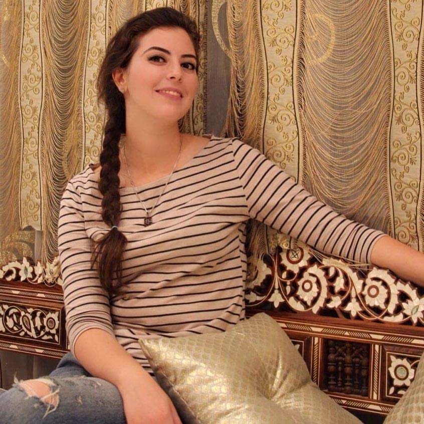

COMPETENCES:
Maitrise d'outils BIM et de conception: Revit(complément Dynamo), Sketchup, 3Dmax et Autocad
Maitrise d'outils Rendering: V_ray et Lumion avec certificat de formation.
Maitrise du logiciels de traitement d'image Photoshop, retouche et dessin.
Maitrise du pack Office: Excel, Word, PowerPoint, MS Project
Connaissance diverses suite aux formations en logiciels et langages de programmation:VBA pour Excel.
Architecture 3D:
Autocad
Revit
Dynamo
Sketchup
3DsMax
Rendering:
Lumion
V_ray